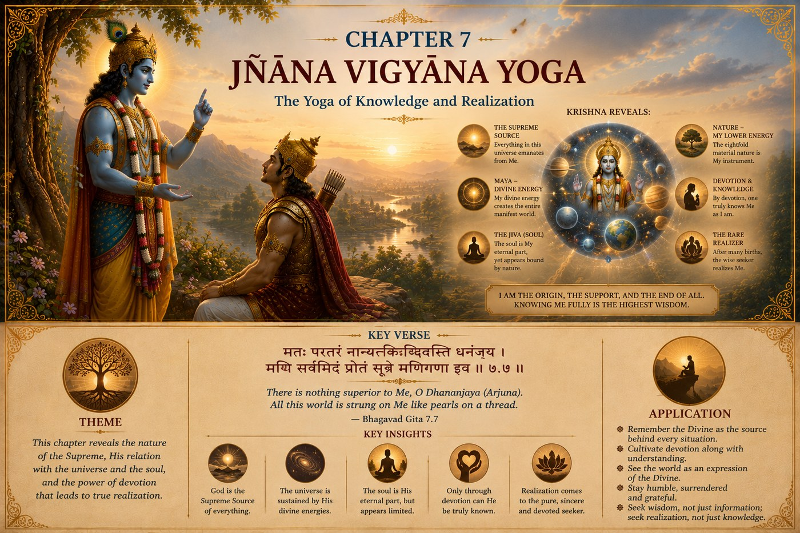

The GITA Project › Week 7 · Chapter 7

Week 7 · Chapter 7 — Jñāna Vijñāna Yoga: The Yoga of Knowledge and Realization
Student Theme — Knowing About the Divine and Recognizing It
Every life has moments where……we begin asking not only how to live, but who is guiding this journey called life.
As children, we naturally ask questions about the world around us. Why is the sky blue? How do plants grow? Why do the seasons change? As we grow older, our questions become deeper. Who am I? Why do I exist? What is the purpose of life? Is there a higher intelligence behind this universe? How can I know God? These questions have inspired seekers throughout history. Chapter Seven begins answering them.
One question — When you feel genuine awe — before the stars, the ocean, an act of kindness — are you sensing something larger than yourself, or just a passing feeling?
A moment you may know — You catch a sunrise, or hear a piece of music, and for a second the whole world feels meaningful. Then the day rushes in and the moment is gone.
This chapter's promise — You will learn that knowing about the Divine and actually recognizing it in daily life are two different things — and that wonder is where the second one begins.
Who is guiding this journey?
Arjuna has traveled a remarkable journey. He has moved from despair to understanding. From confusion to purposeful action. From restless thinking toward a disciplined mind. Lord Shri Krishna now invites Arjuna to take the next step.
Until now, much of their conversation has focused on understanding life. Now the conversation turns toward understanding the One who is the source of life itself. Lord Shri Krishna begins revealing His Divine nature. This chapter is not merely about acquiring knowledge. It is about developing a relationship with the Divine.
Understanding the SituationImagine receiving a beautifully wrapped gift. You admire the wrapping. You appreciate the ribbon. You examine the box from every angle. But you never open it. Would you ever discover what was inside?
Sometimes we experience life in a similar way. We become fascinated by achievements, possessions, technology, entertainment, recognition, success. These things are part of life. But they are not its deepest purpose. Lord Shri Krishna teaches Arjuna to look beyond appearances — to recognize the Divine presence that sustains all creation, to see not only what the world contains, but also Who gives it existence. Knowledge becomes complete only when it leads us toward that realization.
The Court of Dharma™Six steps into knowing and recognizing the Divine
- One Situation
- Lord Shri Krishna begins revealing His Divine nature and His relationship with all of creation.
- One Dilemma
- Should we see life as a collection of separate experiences, or recognize the deeper unity that connects everything?
- One Question
- How can I know and experience the Divine in my everyday life?
- One Conversation
- Lord Shri Krishna explains that everything we experience has its origin in Him — the beauty of nature, the brilliance of intelligence, the strength of character, the compassion shown through service, the order found throughout creation. These are not separate from the Divine; they reflect His presence. Yet many people become distracted by temporary desires and focus only on what is immediate. He welcomes all who approach Him — those who seek help in hardship, knowledge, success, or truth itself — and especially praises those whose devotion grows from understanding and love, who recognize the Divine not only in temples or sacred places, but throughout all of life.
- One Virtue
- Wonder — the ability to look at ordinary things with extraordinary appreciation, so that gratitude and devotion begin to grow.
- One Life Practice
- Slow down and notice five things you normally overlook, then name how you recognized the Divine through them. (Full practice below.)
Two verses on knowing and recognizing the Divine
Verse 1 — Four who turn toward the Divine · 7.16
चतुर्विधा भजन्ते मां जना: सुकृतिनोऽर्जुन ।
आर्तो जिज्ञासुरर्थार्थी ज्ञानी च भरतर्षभ ॥
chatur-vidhā bhajante māṁ janāḥ sukṛitino 'rjuna
ārto jijñāsur arthārthī jñānī cha bharatarṣhabha
“Fourfold in division are the righteous ones who worship me, O Arjuna; the suffering, the seeker for knowledge, the self-interested and the wise, O Lord of the Bharatas.”
— Bhagavad Gita 7.16 · trans. Annie Besant (1922), public domain — via Wikisource
Words to Remember — chatur-vidhā four kinds · ārta the distressed · jijñāsu seeker of knowledge · arthārthī seeker of possessions · jñānī one situated in knowledge.
In plain words. Notice how welcoming this is. Krishna does not require a perfect motive before you come. People turn toward the Divine for many reasons — some in pain, some out of curiosity, some hoping for success, some already in love with truth. All are received. Wherever you honestly begin is a valid place to begin.
Reflect: Of these four, which one sounds most like the reason you reach for something larger than yourself right now?
Verse 2 — The rare soul who sees the Divine in all · 7.19
बहूनां जन्मनामन्ते ज्ञानवान्मां प्रपद्यते ।
वासुदेव: सर्वमिति स महात्मा सुदुर्लभ: ॥
bahūnāṁ janmanām ante jñānavān māṁ prapadyate
vāsudevaḥ sarvam iti sa mahātmā su-durlabhaḥ
“At the close of many births the man full of wisdom cometh unto Me; 'Vasudeva is all,' saith he, the Mahatma, very difficult to find.”
— Bhagavad Gita 7.19 · trans. Annie Besant (1922), public domain — via Wikisource
Words to Remember — jñānavān one endowed with knowledge · prapadyate surrenders, takes refuge · sarvam all that is · su-durlabha very rare.
In plain words. This verse names the difference at the heart of the whole chapter. Many people know about the Divine. Far fewer actually recognize it — seeing the same sacred presence in a sunrise, a stranger's kindness, and a quiet moment of peace. That kind of seeing is described as rare and hard-won, ripening “after many births.” It is not a fact you memorize; it is a way of seeing that grows slowly, and cannot be rushed.
Reflect: What is the difference between believing something is true and actually seeing it with your own eyes?
Notice the movement between these two verses: 7.16 meets you exactly where you are, whatever your reason for seeking; 7.19 describes where the road leads — a way of seeing in which the Divine is recognized in everything. Chapter Seven asks us not simply to believe in God, but to develop understanding that ripens into that recognition.
Dharma LensWhen wonder and honesty pull in different directions
Chapter Seven celebrates wonder — the eyes that recognize something sacred woven through life. But wonder can be complicated when other people are watching, and that raises a real tension.
A situation without an obvious answer
Meera goes on a school trip to the mountains. At the summit, watching the light spread across the valley, she feels a wave of genuine awe — a sense of something vast and sacred she can't put into words. But around her, friends are laughing, snapping photos, ranking the view against other trips. When one asks, “Wasn't that boring?” Meera feels the moment shrinking. Does she share what she actually felt and risk being called strange or “too deep”? Does she stay quiet to protect something private and real? Or does she wonder whether the feeling even mattered if she says nothing about it?
Is honoring wonder about speaking it aloud — or about guarding it quietly? The chapter praises those who recognize the Divine, yet it never says such recognition must be announced.
There may be more than one defensible answer here. Some real experiences are meant to be shared, and naming them can deepen them and invite others in. Other experiences are quiet and personal, and forcing them into words at the wrong moment can flatten them. A thoughtful person might handle Meera's moment in more than one way — the honest question is not “did I say it?” but “did I let the wonder change how I see?”
Character in Practice · WonderWhat it means. The ability to look at ordinary things — a tree, a friend's kindness, a parent's daily effort — with extraordinary appreciation, sensing something larger behind them.
What it does not mean. Being naive, or only reacting to spectacular things. Wonder is most powerful when it wakes up to the ordinary.
In daily life. Pausing before you eat; really listening to music instead of using it as background; noticing the quiet peace before the day begins.
How it's misread. As childishness or being “too intense.” In truth, wonder is a mature form of attention — it takes strength to keep noticing in a world that rushes past.
Recognizing progress — without self-righteousness. You find yourself grateful more often, and less quick to treat life as merely something to use. Pair wonder with gratitude, so appreciation turns into care.
The walk to school you make every day without ever looking up. The meal that appeared on the table through someone's unseen effort. The teacher whose preparation you never think about. Chapter Seven gently suggests that the Divine is not only in distant, dramatic places — it is quietly present in the ordinary things you rush past. Wonder is simply slowing down enough to recognize it.
Leadership LabImagine visiting a beautiful national park. You admire the mountains, the rivers, the forests, the wildlife. Some people simply take photographs and leave. Others begin asking deeper questions. How did this beauty come into existence? How is such balance maintained? How can I help preserve it? The first person sees scenery. The second begins to see responsibility.
Lord Shri Krishna teaches that recognizing the Divine naturally leads to respect, gratitude, and care for all creation. Great leaders see not only what exists — they recognize the sacred responsibility of protecting and serving it.
Discussion Circle- ObserveIn verse 7.16, what four kinds of people does Krishna say turn toward Him? What is striking about who is included?
- InterpretVerse 7.19 says seeing the Divine “in all that is” is rare. Why might recognizing something be harder than simply knowing about it?
- ConnectDescribe a moment of genuine awe you have felt. What made it meaningful?
- Ethical tensionReturn to Meera. When is it right to share a moment of wonder, and when is it better to keep it private? Can staying silent still honor it?
- ApplyWhat is one ordinary thing in your daily life you could start noticing with fresh appreciation this week?
- ChallengeSomeone says, “Wonder is just a feeling — it changes nothing.” Respond using this chapter, fairly to both sides.
Purpose: practise wonder by paying deliberate attention to what usually goes unnoticed. Time: about 10 min a day across the week (15–30 min to review and share). Format: individual daily notes, brief share-back in class. Materials: a journal or notes app, a pen.
- Each day, slow down and notice five things you normally overlook — perhaps the beauty of a tree, the kindness of a friend, the effort your parents make, the dedication of a teacher, or the quiet moments of peace before the day begins.
- At the end of each day, write one sentence in your journal beginning: “Today I recognized the Divine through…”
- Allow yourself to notice what is often taken for granted — do not judge whether it is “big enough.”
- At the end of the week, read back over your seven sentences and mark the one that surprised you most.
- Bring that one sentence to class and share it, if you wish.
The Five Things Practice
This week, slow down and notice five things you normally overlook. At the end of each day, write one sentence beginning with “Today I recognized the Divine through…”
Notice how attention changes appreciation. The more deeply we appreciate life, the more naturally gratitude and devotion begin to grow.
1. Personal. Think about a moment when you felt genuine awe — beneath the stars, beside the ocean, hearing music, watching an act of kindness, holding the hand of someone you love. What made that moment so meaningful?
2. Dharma. Where in your life are you most tempted to treat things (or people) as merely useful, rather than something to appreciate?
3. Character. Who or what regularly reawakens your sense of wonder? Have you told them, or thanked them?
4. Action commitment. One ordinary thing I will pause to truly notice each day this week:
5. A private question (you never have to share this): If Lord Shri Krishna were walking beside you today, what might He help you notice that you usually overlook — and why have you been overlooking it?
For a parent or guardian — please listen more than you speak. This is a conversation, not a quiz.
1. Is there something in nature or in everyday life that fills you with wonder, even now?
2. When you were my age, what did you find awe in? Has that changed?
3. Is there a small, ordinary thing in our family life that means more to you than it might seem from the outside?
Teacher Note — Chapter 7
Objective: students can distinguish knowing about the Divine from recognizing it in ordinary life, and can name wonder as the virtue that opens that recognition.
Sensitive-topic alert: awe and “knowing God” touch on personal faith. Keep the room open to students of every belief and of none; frame wonder as attention and appreciation, and never pressure any student to disclose private religious experience.
Likely question: “If seeing the Divine in everything is so rare (7.19), why bother trying?” → The value is in the direction of travel: verse 7.16 shows every sincere beginning is welcomed; growth in wonder changes how we live long before it is complete.
Misconception to avoid: that wonder means only reacting to grand or spectacular things. Emphasize that the chapter's real invitation is to recognize the sacred in the ordinary.
Transition to Chapter 8: having begun to know the Divine, Arjuna now asks the deepest questions — about Brahman, the Self, karma, and what happens at the time of death. Chapter 8 turns from knowing the Divine to understanding the eternal nature of existence.
Week in One Minute
- Teaching
- Everything we experience has its origin in the Divine; knowledge becomes complete when it ripens from knowing about God into recognizing that presence throughout life.
- Key verse
- “After many births… one who is endowed with knowledge surrenders unto Me, knowing Me to be all that is.” — 7.19
- Dharma insight
- Wonder is the beginning of wisdom — appreciation, not just usefulness, is the deeper way to meet life.
- Practice
- Notice five overlooked things a day, and name how you recognized the Divine through them.
A question to carry forward — What sacred thing have I been walking past without seeing?
A quiet note on well-being — awe can stir up big feelings, and sometimes tender ones. If a moment of wonder brings up sadness, longing, or worry rather than peace, that is normal and human. You are always free to keep such feelings private, and to talk with a parent, teacher, or counsellor you trust if they feel heavy to carry alone.
In Chapter Eight, Arjuna asks some of the deepest questions of the entire Bhagavad Gita. What is Brahman? What is the Self? What is Karma? What happens at the time of death? Lord Shri Krishna's answers reveal how understanding the eternal transforms the way we live each moment of our lives. The journey now moves from knowing the Divine to understanding the eternal nature of existence.